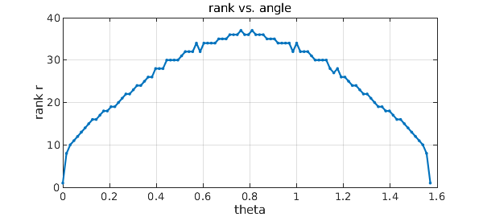

Chebfun2 and Chebfun3 take advantage of the property that many multivariate functions can be approximated by functions of low rank. Not all functions have this property, however. In this Example we explore the significance of axis-alignment for low-rank approximability in 2D.
For example, this bivariate function has rank 1 since it depends on $x$ only:
k = 3; f = chebfun2(@(x,y) tanh(k*x)); r = rank(f)
r =
1
Of course the dependence on $x$ is nontrivial despite the trivial rank, as we can see by looking at the lengths of the chebfuns representing $f$ in the $x$ and $y$ directions:
[m,n] = length(f)
m =
72
n =
1
If we rotate the function 45 degrees in the $x$-$y$ plane, however, the numerical rank becomes significant:
f45 = chebfun2(@(x,y) tanh(k*(x+y)/sqrt(2))); r = rank(f45) [m,n] = length(f45)
r =
36
m =
56
n =
56
Let's explore how it depends on the angle of rotation:
disp(' theta rank m n')
for theta = 0:.157:1.57
c = cos(theta); s = sin(theta);
ftheta = chebfun2(@(x,y) tanh(k*(c*x+s*y)));
r = rank(ftheta); [m n] = length(ftheta);
fprintf('%9.4f %5d %5d %5d\n', theta, r, m, n)
end
theta rank m n 0.0000 1 72 1 0.1570 17 78 20 0.3140 24 73 30 0.4710 30 69 39 0.6280 34 62 47 0.7850 36 55 56 0.9420 34 47 63 1.0990 30 40 70 1.2560 24 30 75 1.4130 17 20 79 1.5700 5 6 76
Notice that for $\theta = \pi/2 \approx 1.5708$, the rank would be 1, but for $\theta = 1.57$ it is 5. Let's plot this data:
tt = linspace(0,pi/2); rr = [];
for theta = tt
c = cos(theta); s = sin(theta);
ftheta = chebfun2(@(x,y) tanh(3*(c*x+s*y)));
rr = [rr rank(ftheta)];
end
plot(tt,rr,'.-'), grid on
xlabel('theta'), ylabel('rank r')
title('rank vs. angle')

Obviously low-rank compression is a big win for $\theta \approx 0$. What about the 45-degree case, i.e., $\theta\approx \pi/4$? Though low-rank compression is less effective here, is it still worthwhile?
To shed light on this question we can fix the angle at 45 degrees and vary the parameter $k$. Here are the ranks for various values of $k$, together with $m$ and $n$ and the ratio $r/m$:
disp(' k r m n r/m')
for k = 1:10
f45 = chebfun2(@(x,y) tanh(k*(x+y)/sqrt(2)));
r = rank(f45); [m n] = length(f45); ratio = r/m;
fprintf('%8.2f %5d %5d %5d %7.2f\n', k, r, m, n, ratio)
end
k r m n r/m
1.00 16 26 26 0.62
2.00 26 42 42 0.62
3.00 36 56 56 0.64
4.00 46 74 72 0.62
5.00 55 89 89 0.62
6.00 65 103 104 0.63
7.00 74 122 124 0.61
8.00 84 137 139 0.61
9.00 96 154 156 0.62
10.00 103 172 171 0.60
There's no need for a plot -- clearly the rank $r$ increases linearly with $k$, and so do $m$ and $n$, making the ratio $r/m$ approximately constant. It follows that for the function oriented at 45 degrees, the low-rank representation involves essentially the same amount of storage as a more prosaic tensor-product representation (differing by a constant factor).
These experiments show the low-rank compression is not effective for all functions. Nevertheless, years of experience by ourselves and many other researchers, in dimensions ranging at least up to the hundreds (e.g. with "tensor train" representations), show that low-rank compression is often effective for the functions that arise in practice. For a discussion of these matters with many references see [1].
In a companion to this Example, we will consider another kind of structure that low-rank approximations can take advantage: localized near-singularities, or to put it more abstractly, non-uniform behavior with respect to translation rather than rotatation [2].
References
-
L. N. Trefethen, Cubature, approximation, and isotropy in the hypercube, manuscript, March 2016.
-
L. N. Trefethen, Low-rank approximation and localized near-singularities, Chebfun example, to appear.